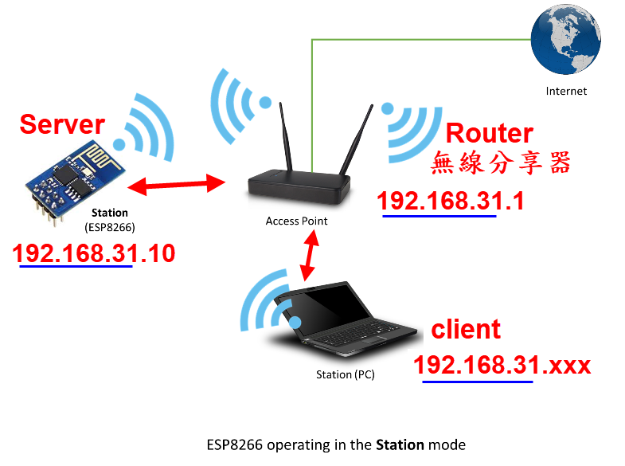
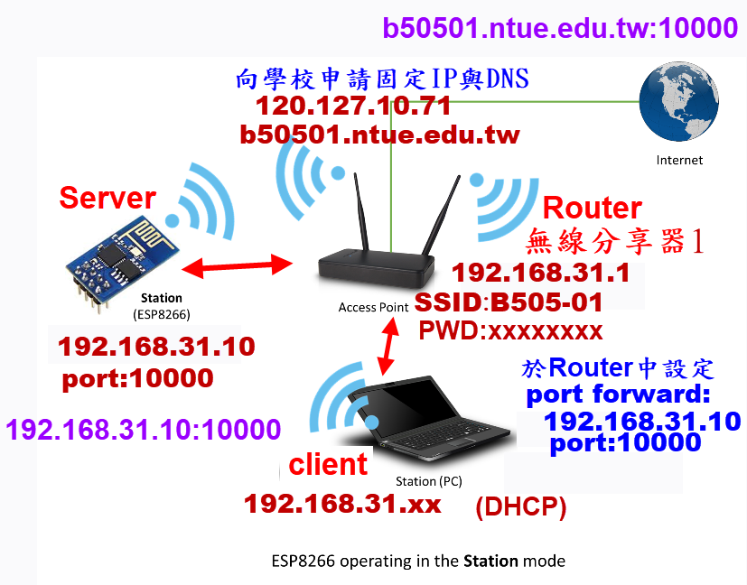
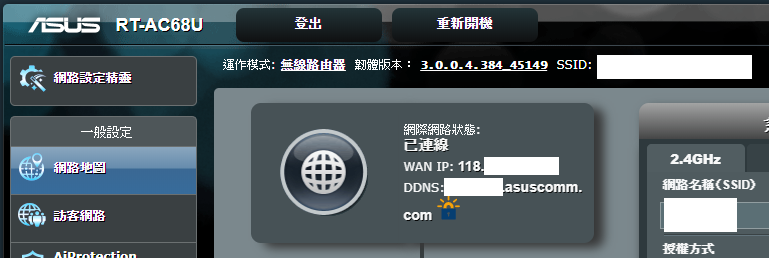
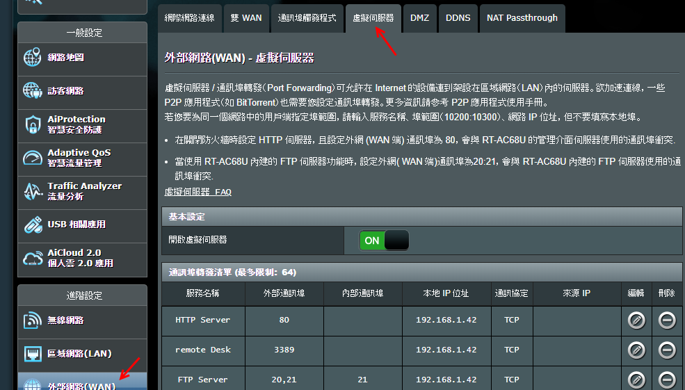

 |
| Soft Access Point Class #include <ESP8266WiFi.h> WiFi.mode(WIFI_AP) WiFi.softAP(ssid, password) WiFi.softAPConfig (local_ip, gateway, subnet) WiFi.softAPIP() |
Station Class #include <ESP8266WiFi.h> WiFi.mode(WIFI_STA) WiFi.begin(APssid, APpw) WiFi.mode(WIFI_AP_STA) WiFi.softAP(ssid, password) WiFi.localIP() |
| //連線至ROUTER(AP) ESP8266為Station #define ssid "yourRouterSSID" #define password "yourRouterPassward" WiFi.begin(ssid, password); //連進router //ESP8266 設為AP+Station WiFi.mode(WIFI_AP_STA); WiFi.softAP(String("IP-"+ String((WiFi.localIP().toString()))),""); //藉以取得ESP所分配到的動態IP 打開WiFi 可搜尋到 IP-xxxxxxx //設定 並啟動Server #define port 9876 //若使用RoboRemo 需用此Port WiFiServer server(port);//設定Server port WiFiClient client; //連進softAP之client server.begin(); //撰寫服務程式 如: void service(){} //loop() //Server 等待連線 //連入者給于 client 物件 //service(client) 服務連入者 |
| 適用 於內網 |
| 先開啟 手機熱點分享 |
| //example 1 (使用手機熱點分享) #include <ESP8266WiFi.h> #define UART_BAUD 115200 #define ssid "yourRouterSSID" #define password "yourRouterPassward" #define led 2 #define packTimeout 5 // ms #define bufferSize 8192 //#define bufferSize 8 #define port 9876 //若使用RoboRemo 需用此Port WiFiServer server(port);//設定Server port WiFiClient client; //連進softAP之client byte buf1[bufferSize]; byte i1=0; byte buf2[bufferSize]; byte i2=0; void setup() { pinMode(led,OUTPUT); digitalWrite(led,1); Serial.begin(UART_BAUD); WiFi.begin(ssid, password); //連進router while (WiFi.status() != WL_CONNECTED) { delay(500); } WiFi.mode(WIFI_AP_STA); WiFi.softAP(String("IPGGx-"+ String((WiFi.localIP().toString()))),""); //藉以取得ESP所分配到的動態IP 打開WiFi 可搜尋到 IP-xxxxxxx server.begin(); digitalWrite(led,0); } void loop(){ if(!client.connected()) { // if client not connected client = server.available(); // wait for it to connect return; } service(client); } void service(WiFiClient client){ // here we have a connected client if(client.available()) { while(client.available()) { buf1[i1] = (byte)client.read(); // read char from client if(i1<bufferSize-1) i1++; } // now send to UART: Serial.write(buf1, i1); i1 = 0; } if(Serial.available()) { // read the data until pause: while(1) { if(Serial.available()) { buf2[i2] = (char)Serial.read(); // read char from UART if(i2<bufferSize-1) i2++; } else { //delayMicroseconds(packTimeoutMicros); delay(packTimeout); if(!Serial.available()) { break; } } } // now send to WiFi: client.flush(); client.write((char*)buf2, i2); i2 = 0; } }
|
| router 分配表(link) |
| 適用 於內網 |
| //Example 2 //要求ROUTER給定 指定動態IP #include <ESP8266WiFi.h> #define UART_BAUD 115200 #define ssid "B505-01" //以第1,2組為例 #define password "b505b505" #define packTimeout 5 // ms #define bufferSize 8192 //#define bufferSize 8 #define port 9876 //若使用RoboRemo 需用此Port IPAddress ip(192, 168,31,10); // 第一位同學指定分配 IP IPAddress netmask(255, 255, 255, 0); IPAddress ip_gateWay(192,168,31,1);//Router 1,2組內網IP WiFiServer server(port);//設定Server port WiFiClient client; //連進softAP之client byte buf1[bufferSize]; byte i1=0; byte buf2[bufferSize]; byte i2=0; void setup() { Serial.begin(UART_BAUD); WiFi.begin(ssid, password); WiFi.config(ip, ip_gateWay, netmask);//指定動態IP while (WiFi.status() != WL_CONNECTED) { delay(500); } WiFi.mode(WIFI_AP_STA); WiFi.softAP(String("IPGGx-"+String((WiFi.localIP().toString()))),""); server.begin(); } void loop(){ if(!client.connected()) { // if client not connected client = server.available(); // wait for it to connect return;//若沒有client， 以下程式碼皆不執行(回loop起始點) } service(client); } void service(WiFiClient client){ // here we have a connected client if(client.available()) { while(client.available()) { buf1[i1] = (byte)client.read(); // read char from client if(i1<bufferSize-1) i1++; } // now send to UART: Serial.write(buf1, i1); i1 = 0; } if(Serial.available()) { // read the data until pause: while(1) { if(Serial.available()) { buf2[i2] = (char)Serial.read(); // read char from UART if(i2<bufferSize-1) i2++; } else { //delayMicroseconds(packTimeoutMicros); delay(packTimeout); if(!Serial.available()) { break; } } } // now send to WiFi: client.flush(); client.write((char*)buf2, i2); i2 = 0; } } |
| //return (web) void loop() { // brilliant code idea to test here return; // the rest of a dysfunctional sketch here // this code will never be executed } |
| 適用 於 外網 |
| 以第1,2組 第一位同學為例 |
 |
| //要求ROUTER給定 指定動態IP #include <ESP8266WiFi.h> #define UART_BAUD 115200 #define packTimeout 5 // ms #define bufferSize 8192 //#define bufferSize 8 #define ssid "B505-01" #define password "b505b505" //若欲由外網b50501.ntue.edu.tw(120.127.10.71) //每位同學須照分配的IP 與 port 設定 #define port 10000 //第一位同學指定分配Port 10000 IPAddress ip(192, 168,31,10); // 第一位同學指定分配 IP IPAddress netmask(255, 255, 255, 0); IPAddress ip_gateWay(192,168,31,1);//Router 1,2組內網IP WiFiServer server(port);//設定Server port WiFiClient client; //連進softAP之client byte buf1[bufferSize]; byte i1=0; byte buf2[bufferSize]; byte i2=0; void setup() { Serial.begin(UART_BAUD); WiFi.begin(ssid, password); WiFi.config(ip, ip_gateWay, netmask);//指定動態IP while (WiFi.status() != WL_CONNECTED) { delay(500); } WiFi.mode(WIFI_AP_STA); WiFi.softAP(String("IPGGx-"+String((WiFi.localIP().toString()))),""); server.begin(); } void loop(){ if(!client.connected()) { // if client not connected client = server.available(); // wait for it to connect return;//若沒有client， 以下程式碼皆不執行(回loop起始點) } service(client); } void service(WiFiClient client){ // here we have a connected client if(client.available()) { while(client.available()) { buf1[i1] = (byte)client.read(); // read char from client if(i1<bufferSize-1) i1++; } // now send to UART: Serial.write(buf1, i1); i1 = 0; } if(Serial.available()) { // read the data until pause: while(1) { if(Serial.available()) { buf2[i2] = (char)Serial.read(); // read char from UART if(i2<bufferSize-1) i2++; } else { //delayMicroseconds(packTimeoutMicros); delay(packTimeout); if(!Serial.available()) { break; } } } // now send to WiFi: client.flush(); client.write((char*)buf2, i2); i2 = 0; } }
|
| 廣域網路（Wide Area Network，縮寫為 WAN），又稱廣域網路、外網、公網。   |
| How to Forward a port(web) A port forward is a way of making a computer on your home or business network accessible to computers on the internet, even though they are behind a router. |
| 搜尋基地台 |
| #include "ESP8266WiFi.h" void setup() { Serial.begin(115200); // Set WiFi to station mode and disconnect from an AP if it was previously connected WiFi.mode(WIFI_STA); WiFi.disconnect(); delay(100); Serial.println("Setup done"); } void loop() { Serial.println("scan start"); // WiFi.scanNetworks will return the number of networks found int n = WiFi.scanNetworks(); Serial.println("scan done"); if (n == 0) { Serial.println("no networks found"); } else { Serial.print(n); Serial.println(" networks found"); for (int i = 0; i < n; ++i) { // Print SSID and RSSI for each network found Serial.print(i + 1); Serial.print(": "); Serial.print(WiFi.SSID(i)); Serial.print(" ("); Serial.print(WiFi.RSSI(i)); Serial.print(")"); Serial.println((WiFi.encryptionType(i) == ENC_TYPE_NONE) ? " " : "*"); delay(10); } } Serial.println(""); // Wait a bit before scanning again delay(5000); } |